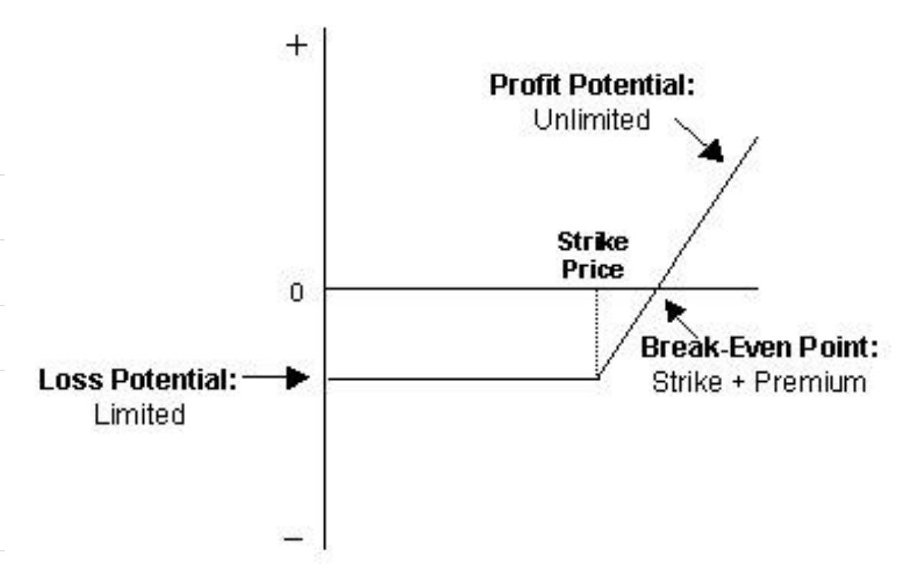
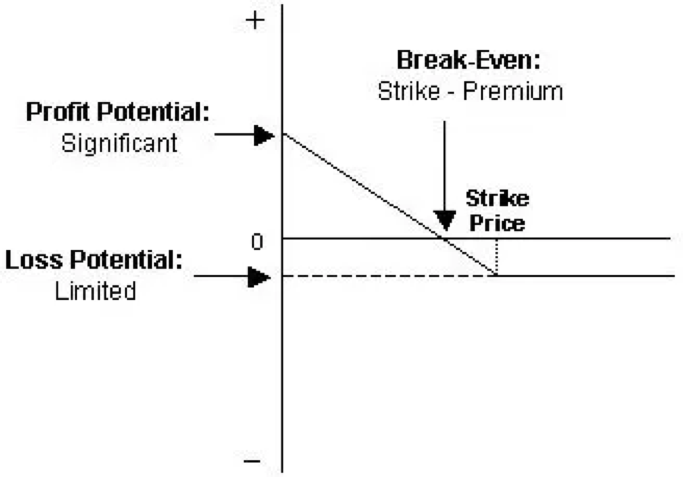

5. 期权 & 期货¶
5.1. 期权与期货有什么区别？¶
5.1.1. 概述¶
期权和期货都是投资者用来赚钱或对冲当前投资的金融产品。 两者都是在特定日期以特定价格购买投资的协议。
只要合约生效，期权赋予投资者在任何时候以特定价格购买（或出售）股票的权利，但没有义务。
期货合约要求买方在特定的日期购买股票，卖方出售股票，除非持有人在到期日之前关闭头寸。
期权和期货市场的不同之处在于运作方式以及对投资者的风险程度。
5.1.2. 看涨期权和看跌期权¶
有两种选择：看涨期权和看跌期权。看涨期权是在协议到期前以特定价格购买股票的合约，称为执行价格。看跌期权是以特定价格出售股票的合约。
期权是衍生形式的投资，是购买或出售股票的合约，在协议确定之前不代表相关投资的实际所有权。
举个例子，假设投资者买了一个看涨期权，在未来三个月内以50美元的价格买入XYZ股票。该股目前的交易价格为49美元。如果股票涨至60美元，买方可以行使以50美元的价格购买股票的权利。然后买方可以立即以60美元的价格出售股票，获得每股10美元的利润。
期权买方也可以卖出看涨期权并获利，看涨期权每股价值10美元。
如果期权在合约到期时交易价低于50美元，期权就毫无价值。买方损失该期权的预付款，称为溢价。
5.1.3. 期权的风险¶
买方看涨期权的风险仅限于预付的保费。这笔保费在合同期内波动。基于多种因素，包括执行价格与当前基础证券价格的差距以及合约剩余时间。这笔保费支付给开立看跌期权的投资者，也称为期权卖方。
期权卖方是交易的另一边。投资者有无限的风险。假设股票涨到100美元。期权卖方被迫以每股100美元的价格购买股票，以每股50美元的价格将其出售给买家。期权卖方，每股亏损50美元，回报是一笔小额保费。
期权买方或期权卖方可以通过购买看涨期权来关闭头寸，回归平稳。损益是收到的保费与回购期权或退出交易的成本之间的差额。
5.1.4. 看跌期权¶
看跌期权是在到期日或之前以预购价格出售股票的权利。买入此期权的交易者预计标的股票的价格会下跌。
例如，投资者拥有以100美元卖出XYZ的卖出期权，在期权到期之前XYZ的价格跌至80美元，则投资者每股收益20美元，减去保费成本。 如果到期时XYZ的价格高于100美元，则该期权毫无价值，投资者将失去预付的保费。
看跌期权买方或卖方可以在到期前随时关闭头寸以锁定损益。通过购买期权（在卖方的情况下）或出售期权（在买方的情况下）来完成的。 看跌期权买方也可选择以预购价行使卖出权。
5.1.5. 期货合约¶
期货合约是未来以约定价格出售或购买资产的义务。
从玉米或石油等商品的角度考虑，期货是最容易理解的。 期货合约是真正的对冲投资。 如果在交付之前市场价格下跌，农民希望预先锁定可接受的价格。 如果在交付时价格飙升，买家希望预先锁定价格。
假设两位交易商同意石油期货合约每桶50美元的价格。 如果石油价格上涨至55美元，合约的买方每桶赚5美元，卖方则失去更好的交易机会。
5.1.6. 谁交易期货？¶
期货市场的机构交易商和零售交易商存在很大差异。
期货是为机构买家发明的。经销商打算占有原油以向炼油厂出售，或者将大量玉米出售给超市经销商。提前确定价格使合同双方不受大幅价格波动的影响。
零售买家买卖期货合约是对证券价格的押注。希望从期货价格的上涨或下跌中获利。并不打算占有任何产品。
期货市场已超越石油和玉米。股票期货可以在个股或标准普尔500指数上购买。
期货合约的买方不需要预先支付全部合约金额。支付，初始保证金，价格的百分比。
例如，石油期货合约是1,000桶石油。以100美元购买石油期货合约的协议相当于100,000美元的协议。买方需要为合同支付数千美元，如果对市场的赌注错了，支付更多。
5.1.7. 期货是更大的投注¶
期权有风险，期货对个人投资者来说风险更大。
标准期权合约是100股股票。 如果股票的交易价格为30美元，则总股本为3,000美元。 标准黄金合约是100盎司黄金。 如果黄金交易价格为每盎司1,300美元，则合约价格为130,000美元。 期权合约默认情况下较小，但投资者可以购买多份合约。
5.1.8. 期货风险更大¶
当投资者购买股票期权时，唯一的负债是合约的保费。 当卖方开立看跌期权时，卖方将面对股票基础价格的最高债务。 如果看跌期权让买方有权以每股50美元的价格出售股票，股票价格降至10美元，发起合约的人必须同意购买合约价值的股票，每股50美元。
要点
期货合约往往是大笔资金。 以给定价格出售或购买的义务使得期货的性质更具风险。
但是，期货合约涉及买方和卖方的最大责任。 随着股票价格的变动，协议的任何一方不得不将更多资金存入其交易账户以履行义务。
期货头寸的收益每天自动对应市场价，在每个交易日结束时，头寸价值的变化（上涨或下跌）转到各方的期货账户。
5.1.9. 期权是可选的¶
购买看涨期权或看跌期权的投资者有权以特定执行价买入或卖出股票。 但是，没有义务在合同到期时行使期权。 期权投资者只有在存入资金时才会行使合约，这意味着期权具有一定的内在价值。
期货合约的购买者有义务在到期时从合约卖方购买相关股票，无论价格是多少。
5.1.10. 期权合约的例子¶
更复杂的是，期权在期货上买卖。 这可以说明期权和期货之间的差异。
芝加哥商业交易所的黄金期权合约的基础资产是COMEX黄金期货合约。
期权投资者会购买一个看涨期权，每份合约的溢价为2.60美元，执行价格为1,600美元，于2019年2月到期。
看涨的持有人看好黄金，有权在2019年2月22日收盘后到期之前承担相关的黄金期货头寸。如果黄金价格高于1,600美元的执行价格，投资者将行使购买期货合约的权利。 否则，投资者将允许期权合约到期。 最大损失是合同支付的2.60美元的保费。
5.1.11. 期货合约的例子¶
投资者会决定购买黄金期货合约。 一份期货合约的基础资产为100金衡盎司黄金。
买方有义务在期货合约规定的交割日从卖方接受100金衡盎司黄金。 假设交易者对持有黄金没有兴趣，合约将在交割日之前出售或转入新的期货合约。
随着黄金价格上涨或下跌，每个交易日结束时，收益或损失金额将记入投资者账户。
如果市场上的黄金价格低于买方同意的合同价格，期货买方仍有义务在交割日向卖方支付较高的合同价格。
5.1.12. 其他差异¶
期权和期货听起来相似，但非常不同。 期货市场更容易理解，由于许多合约的规模，存在相当大的风险。
购买期权相当复杂，风险受限于支付的保价。 期权卖方承担更多风险。 期权出卖最好交给有经验的期权交易者。
关键要点
期权和期货是类似的交易产品，为投资者提供赚钱和对冲当前投资的机会。
期权赋予买方在合约有效期内任何时间以特定价格购买（或出售）资产的权利，但没有义务。
期货合约赋予买方购买特定资产的义务，卖方在特定的日期出售和交付该资产，除非持有人头寸到期前平仓。
5.2. 期权交易策略：初学者指南¶
期权是有条件的衍生合约，允许合约买方（期权持有人）以选定的价格买入或卖出证券。 对于此类权利，期权买方向卖方收取“保价”费用。 如果市场价格对期权持有者不利，会让期权到期毫无价值，确保损失不高于保价。 期权卖家（期权卖方）承担的风险高于期权买家，这就是要求保价的原因。
期权分为“看涨”和“看跌”。看涨期权，买方将来可以预定价格（执行价）购买资产。 看跌期权，买方可以预定价格将来出售资产。
5.2.1. 为何交易期权而不是直接交易资产？¶
交易期权有优势。 芝加哥期权交易所（CBOE）是全球最大的此类交易所，提供各种单一股票，ETF和指数的期权。 交易者可以构建期权策略，从买入或卖出单一期权到多个期权头寸的复杂期权。
以下是初学者的基本期权策略。
- 购买期权（长期权）
交易者的首选策略:
对特定股票，ETF或指数持“看涨”或信心，并希望限制风险
使用杠杆来利用价格上涨的优势
期权是杠杆工具，允许交易者通过比标的资产所需的更小金额来放大收益。股票的标准期权合约控制100股基础证券。
假设交易者想在Apple（AAPL）投资5000美元，每股交易价格165美元。有了这笔金额，以4,950美元的价格购买30股。假设股票价格在下个月上涨10％至181.50美元。不考虑经纪佣金，佣金或交易费，交易者的投资组合升至5,445美元，净美元回报率为495美元，即投资资本的10％。
假设股票看涨期权价格为165美元，从现在开始一个月到期，每股收费5.50美元或每份合约550美元。鉴于交易者可用的投资预算，可以购买9份期权，成本为4,950美元。期权合约控制100股，交易者实际上在900股股票上交易。期权到期时股票价格上涨10％至181.50美元，该期权到期后每股价值16.50美元（181.50美元至165美元），或900股14,850美元。9,990美元的净回报，投资资本的200％，与直接交易标的资产相比，回报大得多。
风险/回报：看涨期权的潜在损失限于已支付的保费。潜在利润无限，期权收益随标的资产价格一起上涨，直至到期，理论上收益没有限制。

- 买入看跌期权（长期看跌）
交易者的首选策略：
• 看跌特定股票，ETF或指数，比短期策略承担更低的风险 • 使用杠杆来利用价格下跌的优势
看跌期权与看涨期权的做法相反，看跌期权的价格随基础价格的下跌而上涨。卖空允许交易者从价格下跌中获利，空头的风险很大，理论上对价格上涨的高度没有限制。使用看跌期权，如果基础价格超过期权的执行价格，该期权到期时毫无价值。
风险/奖励 潜在损失限于支付的保费。基础价格不能低于零，头寸的最大利润受到限制，与长期看涨期权一样，看跌期权利加大了交易者的回报。

- 持保看涨期权
交易者的首选：
• 预计标的价格不会有任何变化或略有增加 • 限制上行潜力以换取下行保护
策略涉及购买100股资产并出售股票看涨期权。卖出看涨期权时，收取期权的保金，降低股票的成本基础并提供下行保护。作为回报，卖出期权，交易者以期权的执行价格出售标的股票，限制上行潜力。
交易者以每股44美元的价格购买1,000股BP股票并卖出10份看涨期权（100股一份合约），执行价格为46美元，一个月到期，每股成本0.25美元，或25美元每份合同，10份合同总计250美元。 0.25美元保价使股票价值降至43.75美元，底价下跌到该价格前的损失，被保价抵消，有限的下行保护。
如果股票价格到期前涨至46美元以上，短期看涨期权将执行（或“被提前赎回”），交易者以执行价格交割股票。交易者获得每股2.25美元的利润（46美元的执行价格- 43.75美元的成本基础）。
这个例子表明交易者不期待BP下个月超过46美元或显著低于44美元。 只要股票没超过46美元并且提前赎回，交易者将持有保金，可以选择继续卖出对股票的看涨期权。
风险/奖励：如果股票价格在到期前上涨超过执行价格，可以行使短期看涨期权，交易者以期权的执行价格交割标的股票，即使低于市场价格。 持保看涨期权策略以卖出看涨期权时收到的保金形式，以交换这种风险，得到有限的下行保护。

- 保护性看跌期权
交易者的首选策略：
• 拥有相关资产并获得下行保护。
像上面讨论的策略一样，保护性看跌期权很长；然而，正如其名称所暗示的那样，目标是下行保护而不是试图从下行动作中获利。如果交易者拥有长期看涨的股票，想防止短期内下跌，可能会购买保护性看跌期权。
如果标的价格上涨且高于到期日看跌期权的执行价格，期权到期无价值，交易者失去保金，从增加的基础价格收益。如果标的价格下跌，交易者的投资组合头寸会失去价值，损失由看跌期权头寸的收益所涵盖。该头寸可以有效地视为保险策略。
交易者可以将执行价格设定为低于当前价格，减少保费，降低下行保护。被认为是可扣除保险。假设投资者以44美元的价格购买1,000股可口可乐（KO），并希望未来两个月内保护投资免受价格变动的影响。使用以下看跌期权：
June 2018 options
Premium
$44 put
$1.23
$42 put
$0.47
$40 put
$0.20
该表显示保护成本随级别增加。如果交易者想要保护投资免受任何价格下跌的影响，可以以每股1.23美元或每份合约123美元的执行价格44美元购买10个看跌期权，总成本1,230美元。如果交易者愿意承受某程度的下行风险，可以选择成本更低的价外期权，例如40美元的看跌期权。期权头寸的成本将低得多，仅为200美元。
风险/奖励：如果标的价格保持不变或上涨，潜在损失限于期权保费，该保费作为保险支付。如果相关价格下跌，资本损失被期权价格的增加所抵消，仅限于初始股票价格和执行价格加上期权支付的保金之间的差额。上面的例子中，40美元的执行价格，损失限制在每股4.20美元（44美元-40美元+0.20美元）。
- 其他期权策略
这些策略比仅仅购买看涨期权或看跌期权复杂一些，旨在更好地管理期权交易的风险：
涵保的看涨期权策略或买入-卖出策略：买入股票，投资者在同一股票上卖出看涨期权。购买的股票数量应与卖出的看涨期权合约数量相同。
配对卖出策略：买入股票后，投资者购买相同数量股票的期权。 配对投资就像针对具有特定执行价格的短期损失看涨期权的保险单。 同时，将以较高的执行价格出售相同数量的看涨期权。
保护套策略：投资者购买价外看跌期权，同时卖出一个价外看涨期权。
长期跨越策略：投资者同时购买看涨期权和看跌期权。 两个选项具有相同的执行价格和到期日期。
长期扼杀策略：投资者同时购买价外看涨期权和看跌期权。
它们具有相同的到期日期，但具有不同的执行价格。 看跌期权执行价格应低于看涨期权价格。
底线要点
期权为投资者提供替代策略，从交易标的证券中获利。 有各种策略涉及期权，标的资产和其他衍生品的不同组合。初学者的基本策略包括买入看涨期权，买入看跌期权，卖出有保障的看涨期权以及购买保护看跌。交易期权而不是标的资产有利，例如下行保护和杠杆收益，也存在诸如前期保费支付等缺点。交易期权的第一步是选择经纪人。